摘要LLM 归库摘要
- 核心内容： 原文将单细胞中的三个互补问题拆开处理：Ro/e 用观测/期望细胞数判断组织位置的相对富集；Augur 以分类 AUC 排序最受条件扰动影响的细胞类型；miloR 在 KNN 邻域层面检验差异丰度。
- 适用场景： 已完成 QC、整合、降维和细胞注释的 scRNA-seq 数据，研究疾病/对照、治疗前后、解剖位置或时间状态的细胞组成与连续状态改变。
- 输入： 带样本 ID、条件/位置与细胞类型 metadata 的 Seurat 对象；miloR 还要求真实生物学重复、PCA 和 UMAP。
- 输出： Ro/e 热图、Augur AUC 优先级图、miloR 邻域 logFC/SpatialFDR、显著邻域注释与可选 marker。
- 关键参数/步骤： Ro/e 需检查低细胞数亚群；Augur 的高 AUC 是转录组可分离性；miloR 的
k、PCA 维度和prop决定邻域尺度，设计矩阵必须按样本而非单个细胞构建。- 常见错误： 把 Ro/e 当作样本层面的显著性；把 Augur AUC 当成细胞比例或因果结论；没有生物学重复仍对 miloR 输出作强统计解释；沿用原文示例的
SpatialFDR < 0.9宽松阈值。- 与口腔生信连接： 可用于牙周炎或 OSCC 中病灶/邻近组织的免疫-基质分布、治疗扰动敏感细胞类型与内部状态连续变化；对候选状态继续连接 ligand-receptor、ligand-to-target、TF activity/regulon 和外部验证。
- 归库说明： 已将原文 17 张图本地化；可复用代码整理并同步至私有
hz-bioinfo-codes的01_单细胞/1.5_Roe_Augur_miloR细胞分布扰动差异丰度分析/。
原文信息#
- 标题： 单细胞实战之 Ro/e、Augur、miloR - 入门到进阶（中级篇 4）
- 作者/公众号： 凑齐六个字吧 / 单细胞天地
- 发表时间： 2025-04-06 09:34
- 原文链接： https://mp.weixin.qq.com/s/AVQJEYiF7TApDnRzyYXFWA
- 文章示例： 结直肠癌 T 细胞数据，使用左右半结肠位置作为比较条件。
方法定位#
| 方法 | 回答的问题 | 输入核心列 | 主结果 | 应如何解释 |
|---|---|---|---|---|
| Ro/e / STARTRAC-distribution | 某细胞亚群是否在某个组织/位置相对富集或耗竭？ | celltype、sample、location |
观测/期望细胞数比值 | > 1 为相对富集，< 1 为相对耗竭；先检查细胞数和样本组成 |
| Augur | 哪个细胞类型受疾病、治疗或位置等扰动的转录影响最大？ | celltype、condition |
每种细胞类型的 AUC | AUC 越高，条件间表达越可分；不是细胞数量变化 |
| miloR | 同一大类细胞内部的连续状态/邻域是否在条件间出现差异丰度？ | sample、condition、PCA、UMAP、celltype |
邻域 logFC、SpatialFDR、细胞类型注释 | 以生物学样本为统计单位；适合传统离散 cluster 比例比较遗漏的连续状态 |
三者不是替代关系。对同一数据，Ro/e 先给出解剖分布描述，Augur 定位扰动反应最明显的细胞类型，miloR 再在该细胞类型内部检验哪些连续邻域发生丰度变化。
Ro/e：组织分布倾向#
Ro/e 属于 STARTRAC-distribution 框架。它比较某细胞亚群在位置中的实际细胞数与按总体细胞比例推导的期望数：
$$ Ro/e = \frac{\text{observed cell count}}{\text{expected cell count}} $$
Ro/e > 1：该位置的相对富集。Ro/e < 1：该位置的相对耗竭。- 原文示例中，Treg 在左半结肠具有更高细胞数和 Ro/e；Naive T 在右半结肠更高。
- 这是相对组成指标，若某亚群细胞极少或样本间捕获量差异大，结果会不稳定。不能把单细胞总数当作独立生物学重复。
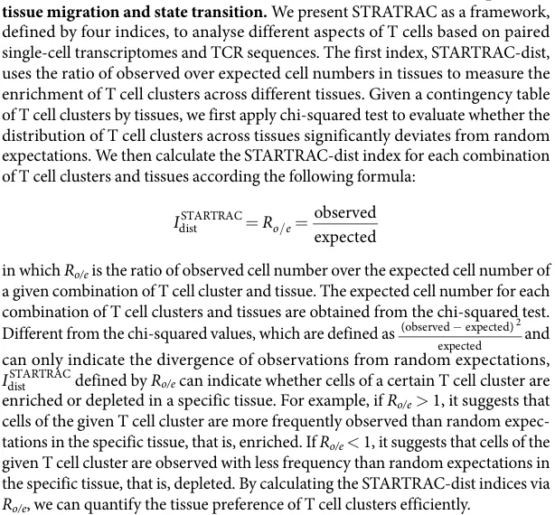
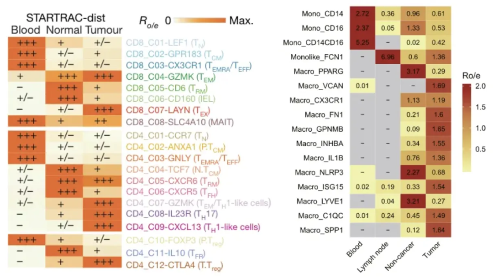
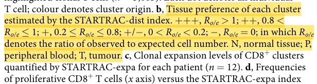
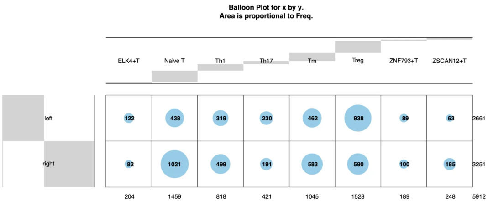
Augur：扰动响应的细胞类型优先级#
Augur 为每种细胞类型训练分类器，测试该细胞类型的转录组能否预测实验条件。以交叉验证 AUC 排序后，高 AUC 的细胞类型被认为对条件变化更敏感。
- 可以比较疾病/健康、治疗前后、空间位置、时间点或体外刺激。
- 原文使用左右半结肠作为条件，Naive T 的 AUC 最高，表示该群体的表达状态最能区分两类位置。
plot_lollipop()适合比较各群 AUC，plot_umap()可用 rank/default 模式将优先级映射到 UMAP。- AUC 衡量表达可分离性，不等于细胞比例、细胞活性强弱或因果作用；应结合样本层面 DE、通路、转录因子活性和外部验证。
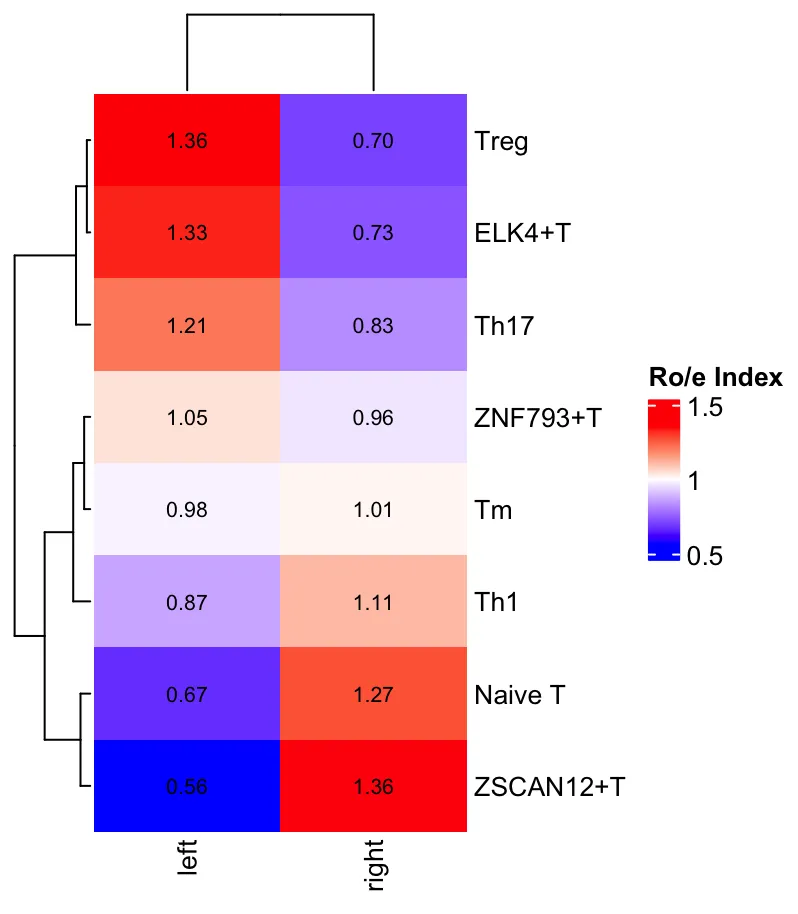
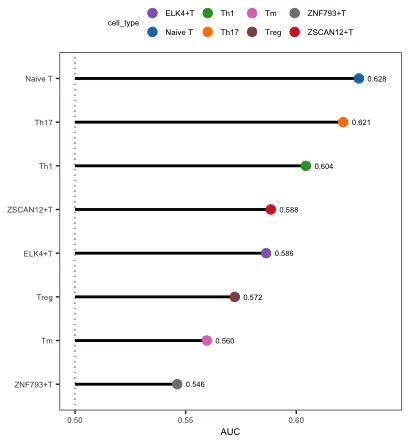
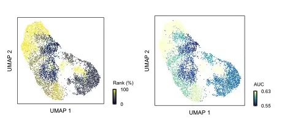
miloR：KNN 邻域差异丰度#
miloR 将细胞放到 PCA KNN 图中，从图中抽取重叠的邻域。随后按样本统计每个邻域的细胞数，在设计矩阵中检验条件差异，并使用考虑邻域重叠的 Spatial FDR 校正。
标准流程#
- 将 Seurat 转为
SingleCellExperiment，再建立Milo对象。 - 用与已有邻居图一致的 PCA 维度
d和邻居数k构建 KNN 图。 - 用
makeNhoods()建立代表性邻域。原文提示prop通常从 0.1-0.2 试起，并检查邻域大小直方图是否在约 50-100 个细胞附近形成合理峰值。 - 用
countCells()按真实样本 ID 统计邻域细胞数。 - 建立样本级
design.df，并使其顺序严格匹配nhoodCounts()的列。 - 用
calcNhoodDistance()和testNhoods()检验条件差异；优先查看SpatialFDR。 - 用
annotateNhoods()、buildNhoodGraph()、plotNhoodGraphDA()、plotDAbeeswarm()解读显著邻域及其主导细胞类型。 - 对可信 DA 邻域，可用
groupNhoods()聚合方向一致的邻域，再用findNhoodGroupMarkers()和testDiffExp()找 marker。
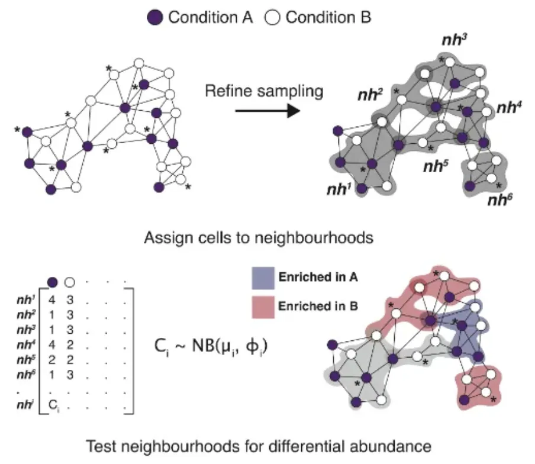
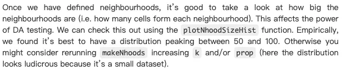
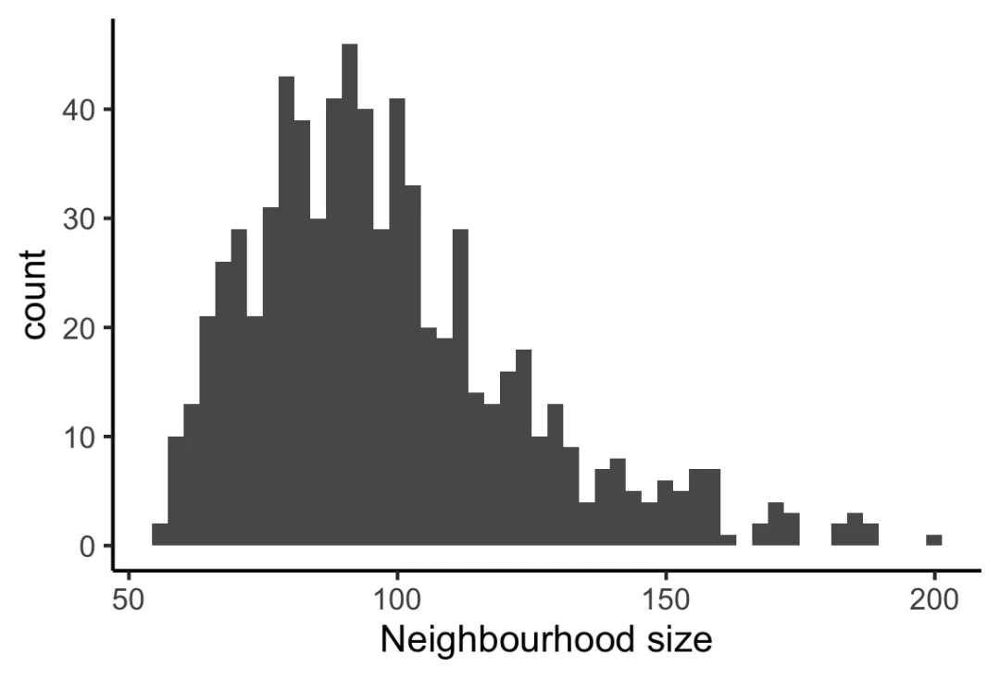
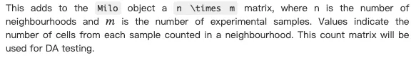
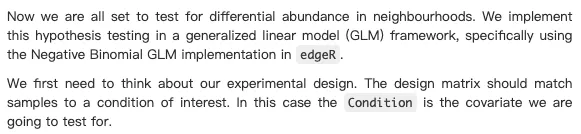
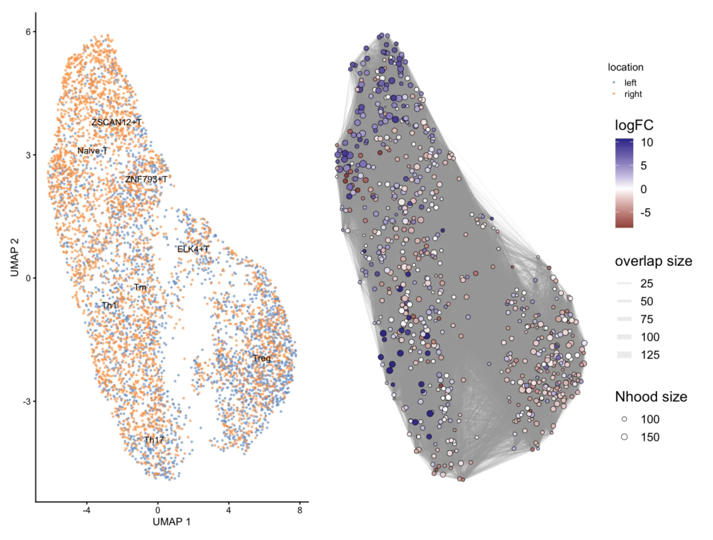
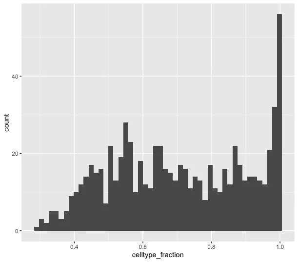
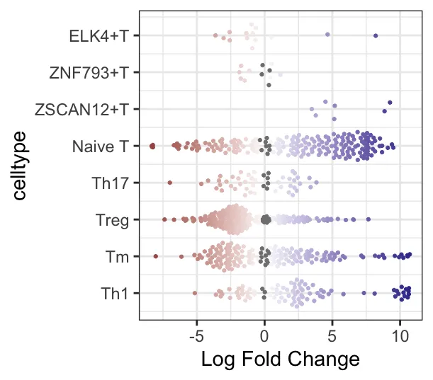
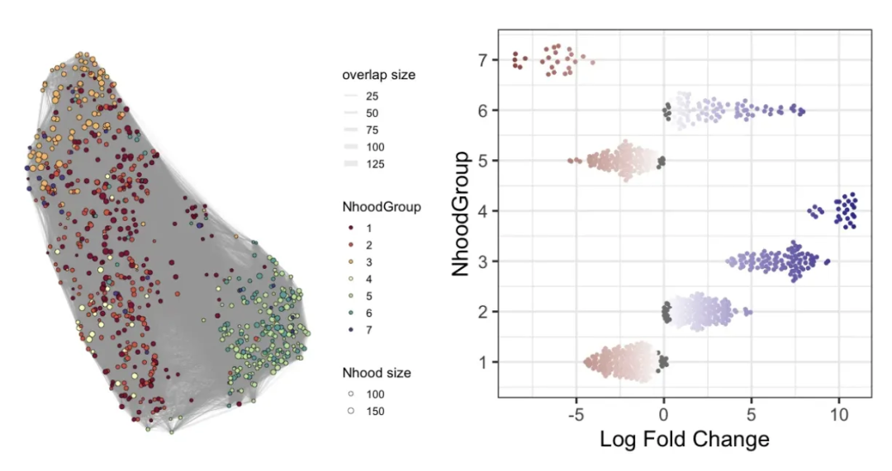
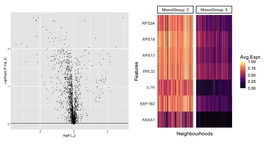
统计边界#
- miloR 的差异丰度测试依赖生物学样本重复。若一组只有一个样本或条件与批次完全混杂，只能作为探索性图形，不能当作可靠的群体统计。
- 原文示例为演示后续分组使用了
SpatialFDR < 0.9。正式分析不应直接继承这一阈值；本次整理脚本默认0.10，并应按研究设计预先定义。 k、d、prop会改变邻域大小与局部结构。应与 Seurat 的 PCA/FindNeighbors 设置协调，而不是跨数据集原样复用。
可复用代码#
远程私有代码库已整理为：
hz-bioinfo-codes/01_单细胞/1.5_Roe_Augur_miloR细胞分布扰动差异丰度分析/01_Roe组织分布倾向分析.Rhz-bioinfo-codes/01_单细胞/1.5_Roe_Augur_miloR细胞分布扰动差异丰度分析/02_Augur扰动响应优先级分析.Rhz-bioinfo-codes/01_单细胞/1.5_Roe_Augur_miloR细胞分布扰动差异丰度分析/03_miloR差异丰度分析.Rhz-bioinfo-codes/01_单细胞/1.5_Roe_Augur_miloR细胞分布扰动差异丰度分析/04_README.md
这些脚本已移除原文固定 .qs 路径、左右半结肠样本名和未经验证的宽松阈值。运行前只需在脚本顶部替换 Seurat .rds 路径与 metadata 列名。
与口腔单细胞分析的衔接#
对于牙周炎和 OSCC，可设定病灶/邻近组织、疾病分期或治疗前后为条件：
- 用 Ro/e 描述髓系、T/NK、B/浆细胞、成纤维细胞和内皮亚群在解剖区域间的相对组成。
- 在每个大类中运行 Augur，找出受病理条件影响最大的细胞类型。
- 在 Augur 高优先级的大类中运行 miloR，识别传统 cluster 比例分析可能漏掉的连续状态变化。
- 对显著 DA 状态，进一步完成
ligand-receptor -> ligand-to-target -> TF activity/regulon，并结合空间转录组、IHC/IF、bulk 队列或独立 scRNA 队列验证。
参考资料#
- STARTRAC GitHub: https://github.com/Japrin/STARTRAC
- Augur GitHub: https://github.com/neurorestore/Augur
- miloR 官方文档: https://marionilab.github.io/miloR/
- Zhang et al. Lineage tracking reveals dynamic relationships of T cells in colorectal cancer. Nature, 2018.
- Skinnider et al. Cell type prioritization in single-cell data. Nature Biotechnology, 2021.
- Dann et al. Differential abundance testing on single-cell data using k-nearest neighbor graphs. Nature Biotechnology, 2022.